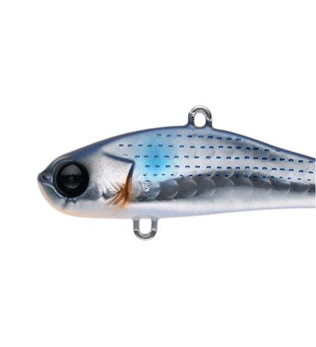
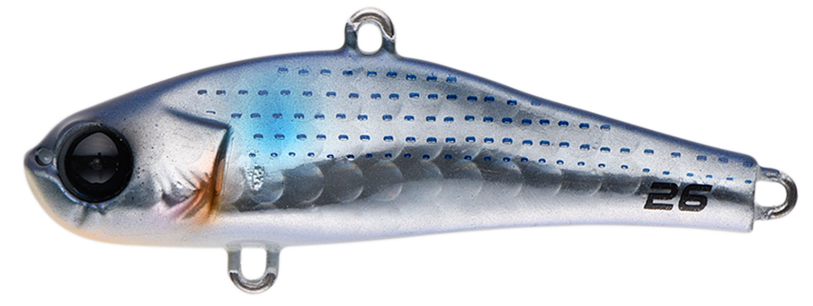
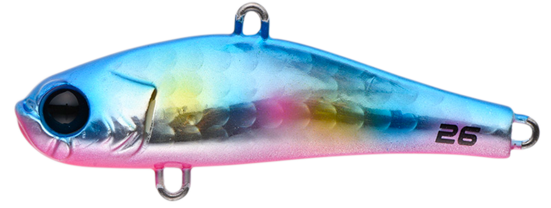
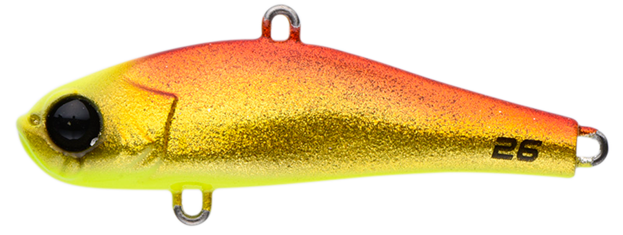
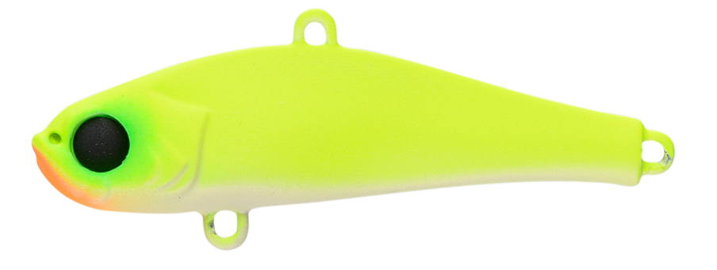

ビットブイ26
（bit-V26）
ビットブイ26（bit-V26）はAPIA（アピア）のバイブレーションです。
村岡昌憲氏が監修したヘヴィコンパクトバイブで、55mmの一口サイズに26gの重さを持たせ、メタルジグ並みの飛距離を実現。メタルジグより単調ではない泳ぎで、はるか遠くの魚にも口を使わせます。大河川やサーフなど、広大なフィールドで追従を許さない1本です。

画像出典:APIA公式HP
スペック
- メーカー
- APIA（アピア）
- タイプ
- ファストシンキング（バイブレーション）
- 全長
- 55mm
- 自重
- 26g
- フック
- #6×2
- アクション
- タイトバイブレーション
- ターゲット
- シーバス・フラットフィッシュ・青物
- 価格
- 1,199円（税込）
▼今すぐチェック
ビットブイ26の特徴
「魚は遠いのに、ベイトは小さい」——そんな状況のための飛び道具
-
メタルジグ並みの飛距離を一口サイズで
55mmの小さなボディに26gの重さを持たせ、メタルジグと同レベルの飛距離を実現。飛距離は欲しいがベイトが小さいとき、見切られやすいときにコンパクトボディが威力を発揮する。
-
立ち上がりの良いキビキビとした泳ぎ
重さがありながら立ち上がりが良く、手元にしっかり伝わるキビキビとしたタイトなバイブレーション。スロー域からアクションが出るので、ボトムレンジをキープしながら動かす釣りにも扱いやすい。
-
リフト＆フォールにも機敏に反応
引き抵抗を抑えつつ、リフト＆フォールなどのロッドアクションにも機敏に反応する。コンパクト＆ヘヴィウエイトゆえに浮き上がりにくく、流速のある大河川のボトム攻略も得意。
ビットブイ26の使い方
基本はただ巻きとリフト＆フォール。遠投して着底させ、ただ巻きでタイトなバイブレーションを出しながら広く探ります。
早巻きからリフト＆フォールまでそつなくこなすのがビットブイ26の強み。ボトム付近をスローに引いたり、ショートリフトを時折入れたりと、少ない入力でしっかり応えてくれるので疲れにくいのも魅力です。
ビットブイ26の得意な状況
大河川やサーフなど、遠投が必要な広大なフィールドが最大の出番。
ベイトが小さいときや、水が澄んでいて見切られている気がするときに強い1本です。ハゼやヒイラギなどを捕食している状況で、ボトムレンジをキープしながら攻める釣りにもハマります。シーバスのほか、フラットフィッシュや青物も狙えます。
ワンポイント
流れのある大河川では、浮き上がりにくさを活かして流れの中でもボトムを取りやすいのが強みです。着底したらすぐに巻き始め、根掛かりを避けながらボトム付近を通しましょう。
サーフでは遠投して広く探り、反応があった距離やレンジを毎投同じように通すのがコツです。
ビットブイシリーズの使い分け
| モデル | 全長／自重 | 得意な場面 |
|---|---|---|
| ビットブイ12 | 48mm／12g | 小型ボディでシャローや小場所、マイクロベイト対策に |
| ビットブイ26 | 55mm／26g | 大河川やサーフの遠投に（本記事のモデル） |
小場所やシャローはビットブイ12、広いフィールドを遠投で探るならビットブイ26と、フィールドの広さと水深で選び分けるとわかりやすいシリーズです。
人気カラー
ビットブイ26は全12色展開。オススメのカラーを厳選して紹介します。

ボラボラ（イナッコ）パターンに合わせやすいナチュラル系。

ブルピンキャンディブルーとピンクのアピール系。日中の青物やシーバスに。

赤金ギャラクシー赤金のフラッシング。濁りやローライトに。

ムラオカチャート監修者の名前を冠したチャート系カラー。
画像出典:APIA公式HP
ビットブイ26に似ているルアー
-
 鉄PANバイブ
ジャクソン
詳細はこちら＞
鉄PANバイブ
ジャクソン
詳細はこちら＞
9〜26gのメタルバイブレーション。26gはビットブイ26と同じ重さで、遠投・レスポンス・強波動で広く探れる。
-
 カンナ15（CANNA15）
ポップシークルー
詳細はこちら＞
カンナ15（CANNA15）
ポップシークルー
詳細はこちら＞
全長58mm・自重15gの小型バイブレーション。港湾・河川のシャローなど、ビットブイ26では重すぎる場面での持ち替えに。
-
 ビッグバッカー107
ジャッカル
詳細はこちら＞
ビッグバッカー107
ジャッカル
詳細はこちら＞
全長107mm・自重27gのメタルバイブレーション。重さは近いが大きなシルエットで、ベイトが大きいときの選択肢になる。